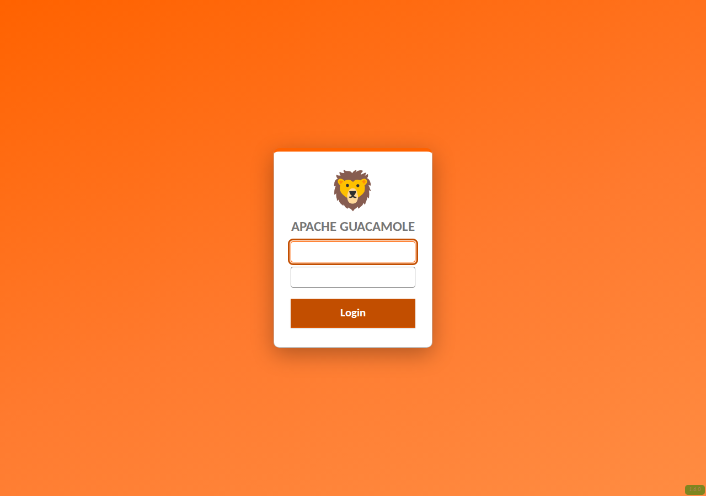
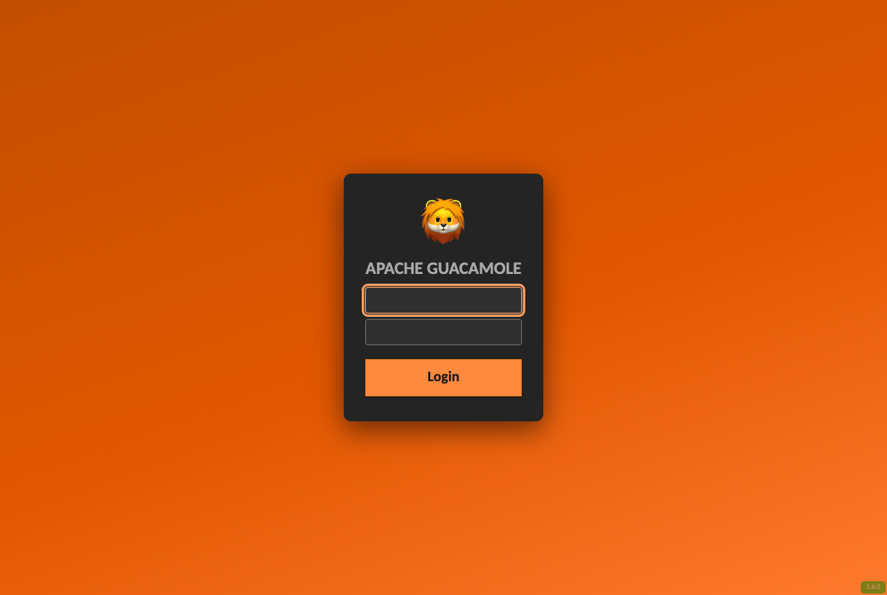
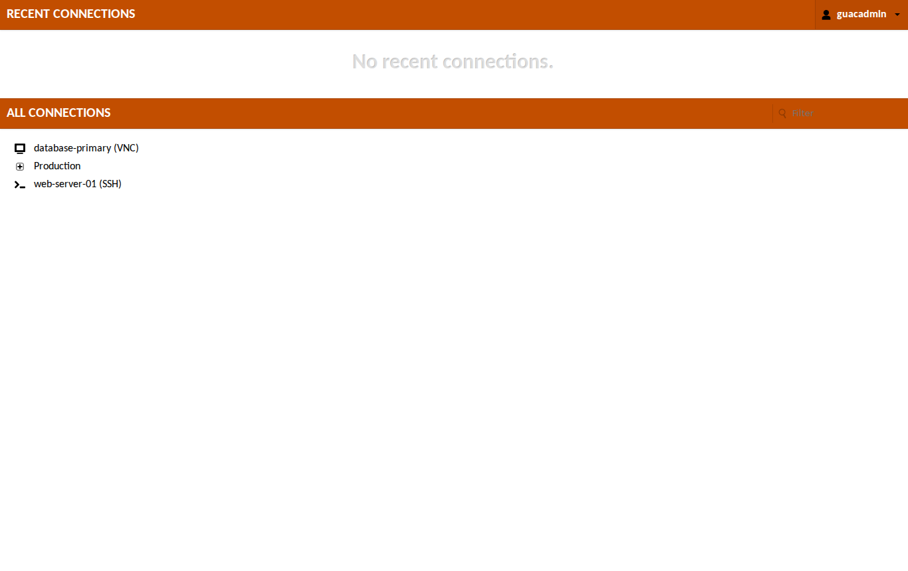
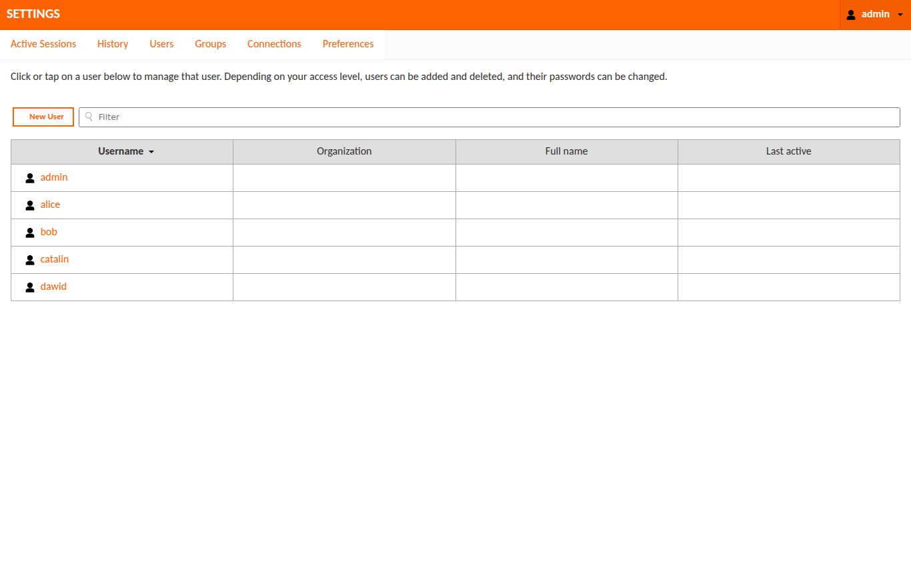
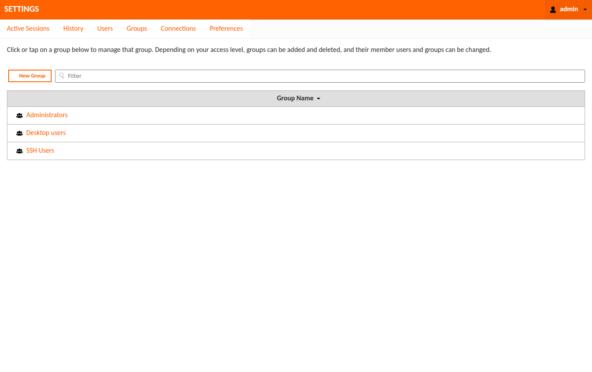

A warm orange coat for Apache Guacamole.
A drop-in CSS extension that repaints the entire portal, login, menus, connection list, admin screens, and the in-session menu, in one jar. No web-app rebuild.
See it
Every screen, in orange.
From the login card to the admin settings, the whole surface is themed. The remote session itself stays untouched.





Why OrangeLion
Built to drop in and forget.
One jar, no rebuild
A standard Guacamole CSS extension. Copy one file into the extensions folder and restart. Nothing else changes.
Whole-portal palette
Login, menus, header bars, buttons, connection list, admin settings, and the in-session menu all wear the orange.
Automatic dark mode
Every surface — login, connection lists, admin tables and forms, dialogs, menus, and the in-session UI — follows the OS or browser prefers-color-scheme and switches to an accessible dark palette (WCAG AA). No toggle, no extra file.
Accessible by default
An audited WCAG AA palette (light and dark), a visible keyboard focus ring, branded visited links, and brand-coloured form controls.
Configurable build
Recolour the whole theme, swap the wordmark or drop in a logo, or build a neutral palette-only variant, all from build.sh options. No CSS editing.
Signed releases
Each release ships a SHA-256 checksum and a SLSA build-provenance attestation, verifiable with the GitHub CLI.
Install
Two commands, then hard refresh.
Drop the jar into any Guacamole install, mount it into the official Docker image with a GUACAMOLE_HOME template, or orchestrate it on Kubernetes and OpenShift.
mkdir -p "$GUACAMOLE_HOME/extensions" cp guacamole-theme-orangelion.jar "$GUACAMOLE_HOME/extensions/"
Restart Guacamole and hard refresh. The log should read Extension "OrangeLion Theme" (orangelion) loaded. Full steps, including the Docker method, are in the instructions.
Give your gateway some character.
Free, open source, and unaffiliated with any organisation. Star it, fork it, or recolour it for your own brand.